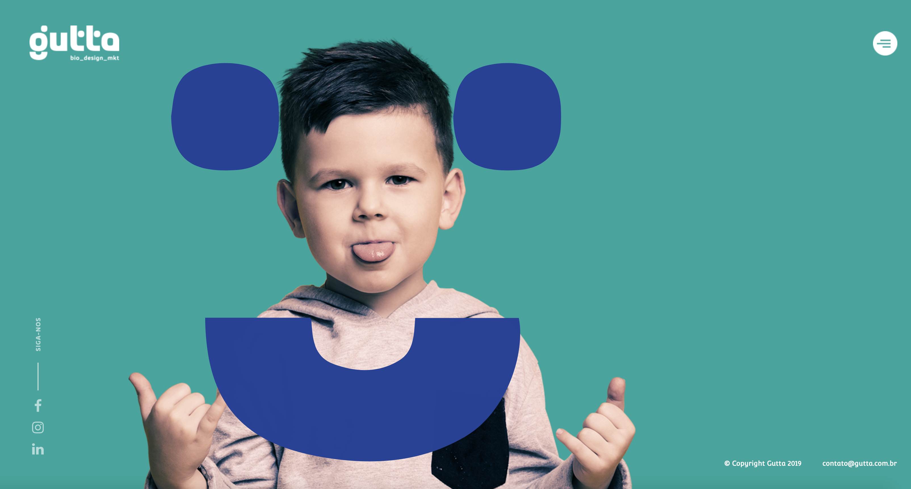
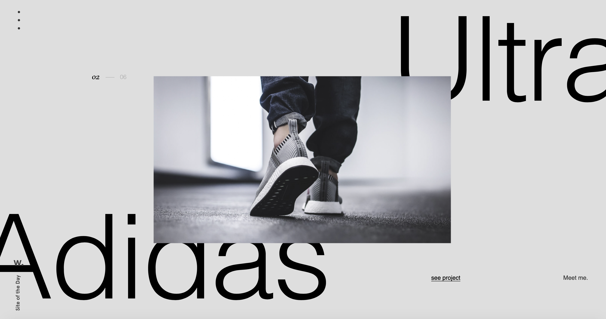

Baumundpferdgarten

- The purpose of this site is to be an interactive platform for the consumer who is looking for a more efficient way to shop
The website contains categories such as Shop, Collections, About and Sale. Within each category, there are numerous products available to purchase via e-commerce.
I think the navigation overall is successful. The organization and categories are clear and the arrow use for navigation allows you to click and drag as you glide across the page, giving san efficient but high end feel. I think one area that could be improved would be changing the layout and navigation of the website to reflect something more unique that stands apart from other clothing brands.
Gutta

- Gutta states that the purpose of their website is “We are a full service creative agency dedicated to the healthcare and life science industry.”
The contents of this website are 6 different categories relating to healthcare and multiple pages of different people for each of the categories.
I think the navigation is definitely interesting and the graphics are engaging. However, The organization could be thought out better to be more user friendly.
Victor.Work

- The main contents of this website is his design work as the main content in his site along with the layering of typography.
I think the navigation exceeds the expectation of average internet users. As one scrolls, the images begin to move and fade into a solid image showing the body of work. One area that could be improved would probably be the organization and giving the site more context behind his work.